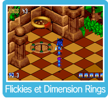

|
|

Si tu fais une Attaque ou une Course tourbillon contre un robot, tu pourras libérer le Flicky qui est prisonnier à l’intérieur. Une fois que le Flicky est libre, touche-le pour qu’il suive Sonic. Quand les Flickies suivent Sonic, ils peuvent l’aider à récupérer des objets dans des endroits difficiles à atteindre. Si Sonic est blessé, les Flickies qui le suivent prendront peur et se disperseront. Rassemble-les avant qu’ils ne s’égarent. Si des Flickies suivent Sonic, dirige-les vers une Dimension Ring et ils iront alors en lieu sûr. Chaque Dimension Ring peut transporter 5 Flickies. Une fois qu’ils ont tous été libérés dans une zone, un portail apparaîtra sous la Dimension Ring pour passer à l’étape suivante du jeu. Tu pourras voyager librement dans toutes les zones que tu as déverrouillées dans un acte. La dernière Dimension Ring portera une croix sur le portail derrière elle. Sauve tous les Flickies et amène-les vers la dernière Dimension Ring pour terminer un acte. |